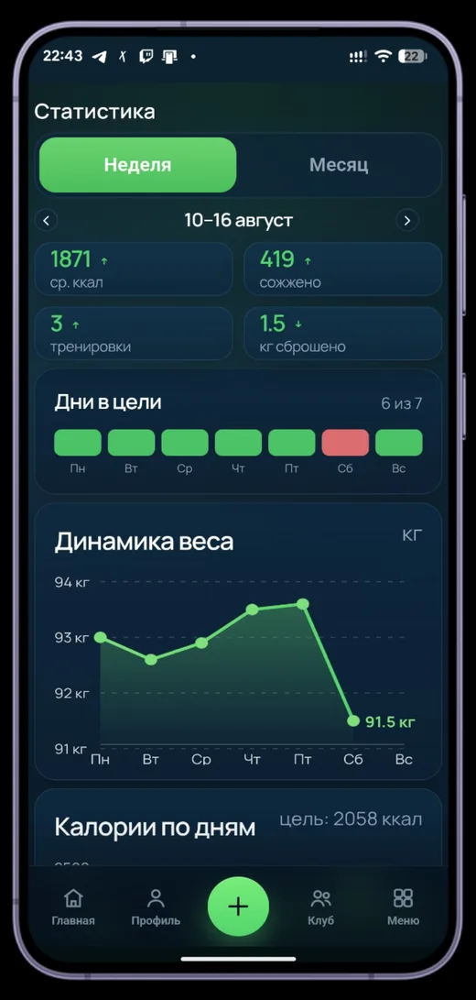
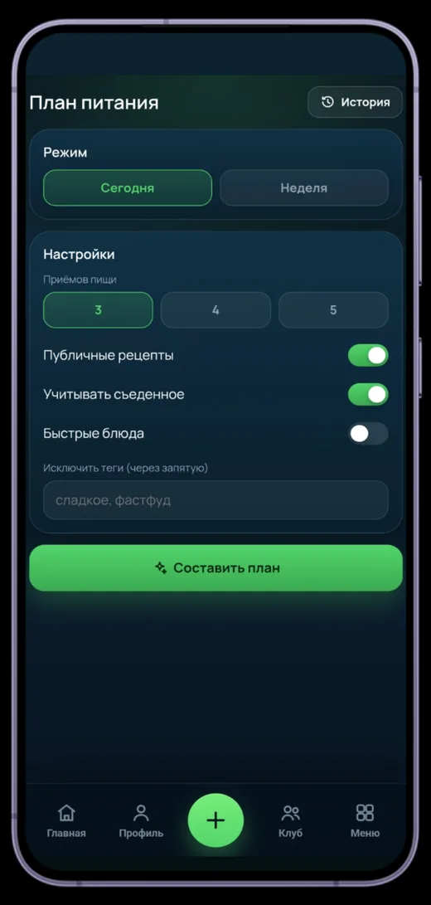
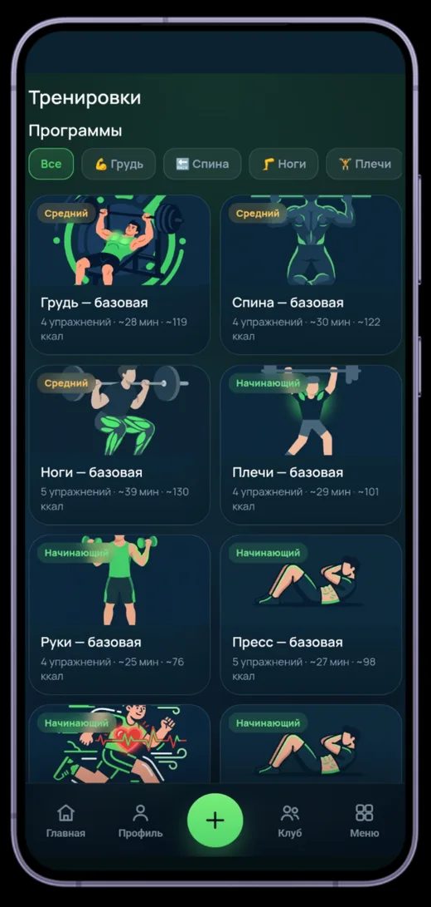

FlareonFit
AI-трекер калорий в виде Telegram WebApp: дневник питания с подсчетом калорий, учет воды и запись тренировок — все в одном приложении, без установки, прямо в Telegram.



Возможности
- Дневник питания с подсчетом калорий с помощью AI
- AI-конструктор плана питания: режимы на день и неделю, фильтры и исключения
- Статистика: динамика веса, дни в цели, сожженные калории
- Отслеживание потребления воды
- Каталог программ тренировок по группам мышц с уровнями сложности
- Вход через Telegram — авторизация WebApp с HMAC-верификацией и JWT
Технологии
Архитектура
Монорепозиторий на pnpm workspaces: apps/api — REST API на NestJS с MongoDB и
JWT-аутентификацией, apps/web — клиент на React + Vite с интеграцией
Telegram WebApp. Развертывание через Docker Compose.